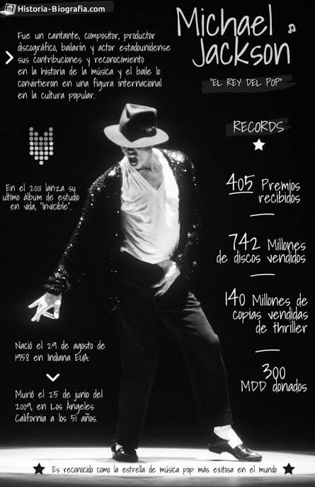

El Rey del Pop
Michael Jackson nació el 29 de agosto de 1958 en Gary, Indiana, Estados Unidos. Desde muy pequeño mostró un gran talento para la música y comenzó su carrera artística junto a sus hermanos en el grupo The Jackson 5. Con el paso de los años inició una exitosa carrera como solista, convirtiéndose en uno de los artistas más importantes e influyentes de la historia de la música.
|
 |
||||
Entre sus álbumes más importantes destacan Off the Wall, Thriller, Bad, Dangerous y HIStory. Su talento, sus innovadoras coreografías y su estilo único marcaron la historia de la música y del entretenimiento. Hoy continúa siendo una de las figuras más admiradas e influyentes del mundo.